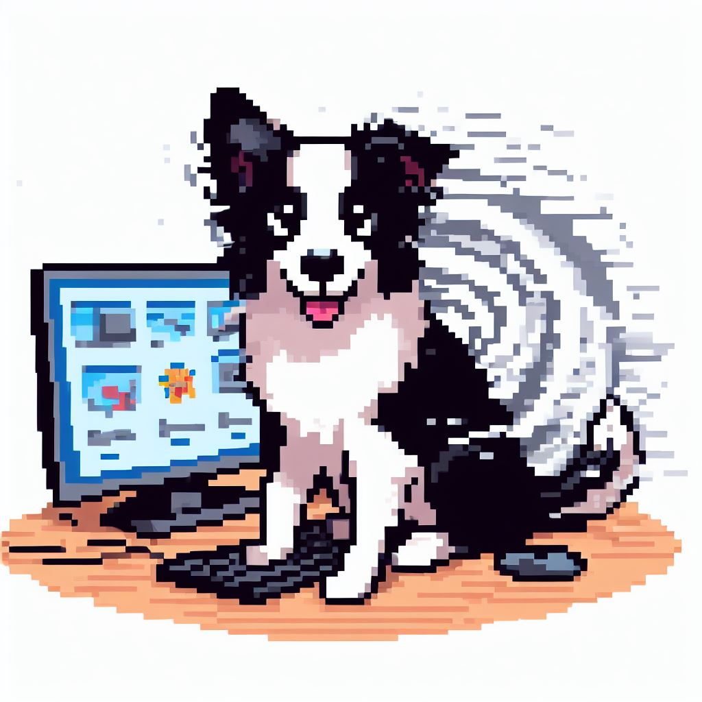

The personal mark — a pixel-art border collie at the keyboard with a 漩涡 vortex behind it. Use as the brand avatar (rounded for product, circle for people). Keep on white; pair the line vortex mark as the secondary glyph.